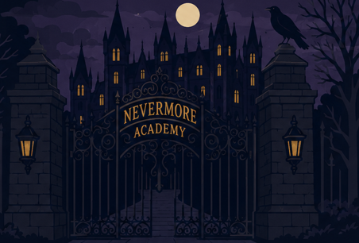
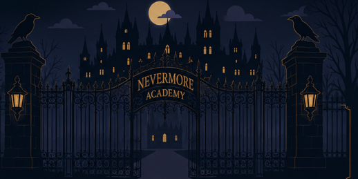
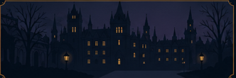
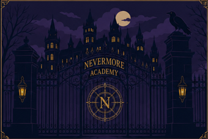
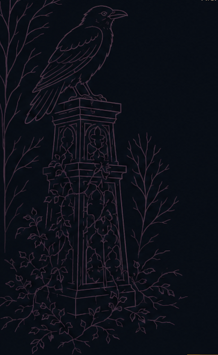
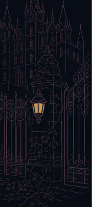

Betekenis van het huis
Nevermore
Voor studenten die stilte, diepgang en mysterie zoeken.
Outcasts. Misfits. Monsters.
Achter deze poorten sluimert meer dan je denkt. Oude gangen. Zwijgende muren. Iets wacht tot jij het durft te vinden.

Over Nevermore
Nevermore is geen gewone school. Achter elke gang wacht iets dat zich niet meteen laat zien.


Graaf dieper. Niet elk verleden wil gevonden worden.
Verken stille plekken waar meer wordt gezien dan gezegd.
Hier tellen nieuwsgierigheid, lef en het durven kijken.
Sommige antwoorden fluisteren. Sommige gangen bewaren geheimen. Soms kiest Nevermore jou.
Meer ontdekken
Elk huis draagt zijn eigen geheim. Misschien hoort een ervan al bij jou.
Betekenis van het huis
Voor studenten die stilte, diepgang en mysterie zoeken.
Toelating
Klaar om dieper te gaan? Volg het spoor. Ontcijfer de tekens.

Ontgrendel jouw Nevermore-huis door verborgen tekens te vinden die door de campus zijn verspreid.
Scan het verborgen symbool om aanwijzingen te onthullen die alleen voor jou bestemd zijn.
Wie goed kijkt, ziet meer dan de rest.

Richt je camera om je heen. Alleen de Noctis-maan laat zich in deze AR-route vinden.

Geen AR? Geen probleem. Sommige geheimen tonen zich liever zonder scherm.
Zoek waar maanlicht goud raakt. Het zegel opent alleen voor wie durft te blijven kijken.
Het verborgen symbool is gevonden. Nevermore heeft jouw aanwezigheid opgemerkt.
Ga naar aanmelden